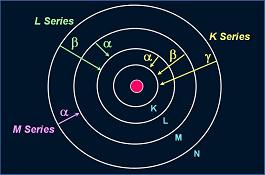
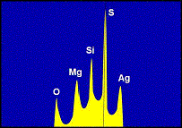

EDX Analysis
and WDX Analysis
EDX Analysis
EDX Analysis stands for Energy Dispersive
X-ray analysis. It is sometimes referred to also as EDS or EDAX analysis. It is a technique used for identifying the elemental composition of the specimen, or an area of interest thereof.
The EDX analysis system works as an integrated feature of a
scanning
electron microscope (SEM), and can not operate on its own without the
latter.
During EDX Analysis, the specimen is bombarded with an
electron
beam inside the scanning electron microscope. The bombarding electrons collide with the specimen atoms' own
electrons, knocking some of them off in the process. A position vacated by
an ejected inner shell electron is eventually occupied by a higher-energy
electron from an outer shell. To be able to do so, however, the
transferring outer electron must
give up
some of its energy by emitting an
X-ray.
The amount of energy released by the
transferring electron depends on which shell it is transferring
from, as well as which shell it is transferring
to. Furthermore, the atom of every element releases
X-rays
with
unique
amounts of
energy during the transferring process. Thus, by measuring the amounts of
energy present in the
X-rays being released by a specimen during electron beam bombardment, the identity of the atom from which the
X-ray was emitted can be
established.
The output of an EDX analysis is an
EDX spectrum
(see
Figure 2 on Page 2). The EDX spectrum is just a plot of how frequently an
X-ray is received for each energy level. An EDX spectrum normally displays peaks corresponding to the
energy levels for which the most X-rays had been received. Each of these peaks are unique to an atom, and therefore corresponds to a single element. The higher a peak in a spectrum, the more concentrated the element is in the
specimen.
An EDX spectrum plot not only identifies the element corresponding to each of its peaks, but the
type of X-ray to which it corresponds as well. For example, a peak corresponding to the amount of energy possessed by
X-rays emitted by an electron in the L-shell going down to the K-shell is identified as a K-Alpha peak. The peak corresponding to X-rays emitted by M-shell electrons going to the K-shell is identified as a K-Beta
peak. See Figure 1.
|
 |
|
Figure
1. Elements in an EDX spectrum are identified
based on the
energy content of the X-rays emitted by their electrons as these electrons
transfer from a higher-energy shell to a lower-energy one |
When performing EDX analysis, the following must be
observed:
1) The probe current must be adjusted such that data collection is just between 10%-30%
dead.
2) Spot Mode operation must be used for contaminants suspected to be concentrated in very small
regions.
3) The EHT level used during the analysis must be higher than the energy peaks corresponding to the elements of
interest.
Failure Mechanisms/Attributes Tested
for by EDX Analysis: Inorganic Contamination, Elemental
Composition

Figure
2. Example of an EDX Spectrum
WDX Analysis
WDX Analysis stands for
Wavelength Dispersive X-ray analysis. It is sometimes referred to also as
WDS analysis.
WDX analysis
works in pretty much the same way as EDX analysis, except that its
detector classifies and counts the impinging X-rays in terms of its
characteristic
wavelengths.
The detector system uses an X-ray analyzing crystal that only allows the
diffraction of desired wavelengths into the X-ray detector for counting.
Advantages
of WDX analysis over EDX analysis include: 1) a much better energy
resolution, preventing many peak overlap errors frequently encountered in
EDX analysis; and 2) lower background noise allowing a more accurate
quantitative analysis.
Its
disadvantages
include:
1) higher time consumption; 2) greater sample damage and chamber
contamination because of the high beam currents required; and 3) high
cost.
See Also:
SEM/TEM;
Auger Analysis;
FTIR Spectroscopy;
SIMS;
LIMS;
ESCA or XPS;
Chromatography;
Failure
Analysis; FA Techniques; Basic FA
Flows;
Package Failures; Die
Failures
HOME
Copyright
© 2001-2004
www.EESemi.com.
All Rights Reserved.